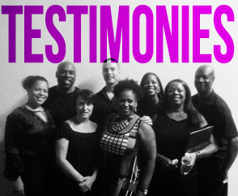

10am Sunday Worship
directions
Who We Are
Who We Are
Our Vision
Our Worship
Our People
Our Staff
Session
Extended Community
Our Beliefs
Our Beliefs
Our Spirituality
Our Dreams
Connect
Connect
Men's Ministry
Women's Ministry
Christmas Store
Testimonies
Maxine Harris
The Rudzavice-Moye Family
Bill Curtis
Grow
Grow
Classes
Resources
Prayer
Donate
Prev
Next
1
2
3
4
5
6
7
8
1
2
3
4
5
6
7
8
